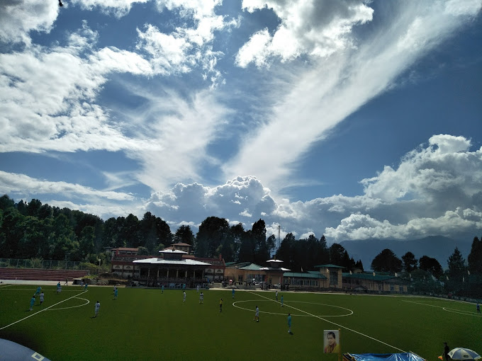
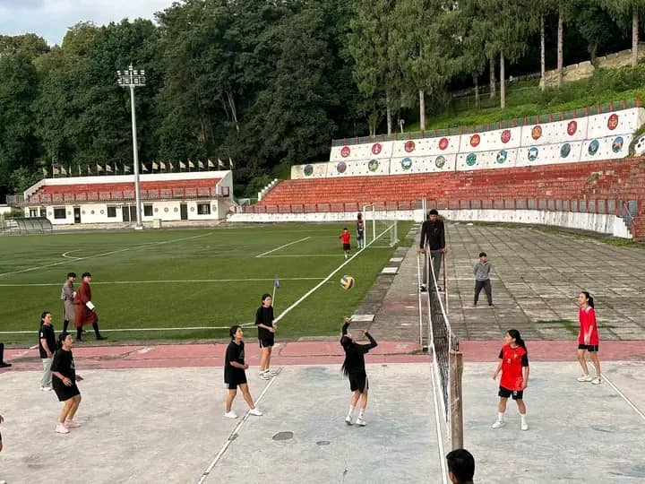

Physical Games
Sherubtse College, one of the premier educational institutions in Bhutan, has a
rich tradition of encouraging both academic excellence and physical development through
sports. The college promotes various physical games to ensure students maintain a balance
between mental and physical well-being. Among the popular sports at Sherubtse are football,
volleyball, and basketball, which play a vital role in building teamwork, discipline, and fitness.
Basketball

Basketball at Sherubtse College has grown into a major sport, gaining popularity for
its fast pace and the excitement it generates among players and spectators alike.
The college boasts a well-maintained basketball court where students frequently engage
in training sessions, friendly matches, and inter-college competitions. Basketball at
Sherubtse focuses on building agility, speed, and teamwork, as well as enhancing individual
skills like shooting, passing, and dribbling. The sport is particularly known for fostering
a sense of sportsmanship and healthy competition among students.
Volleyball

Volleyball is another popular sport that finds an active place in Sherubtse's sporting calendar.
Played by both men’s and women’s teams, volleyball helps students improve their agility, coordination,
and teamwork. The game requires quick reflexes and sharp decision-making, qualities that are deeply
ingrained in the training sessions held at Sherubtse. Regular volleyball competitions, both at a casual
and competitive level, create a vibrant sports culture, and the college encourages students to participate
in national-level tournaments as well.